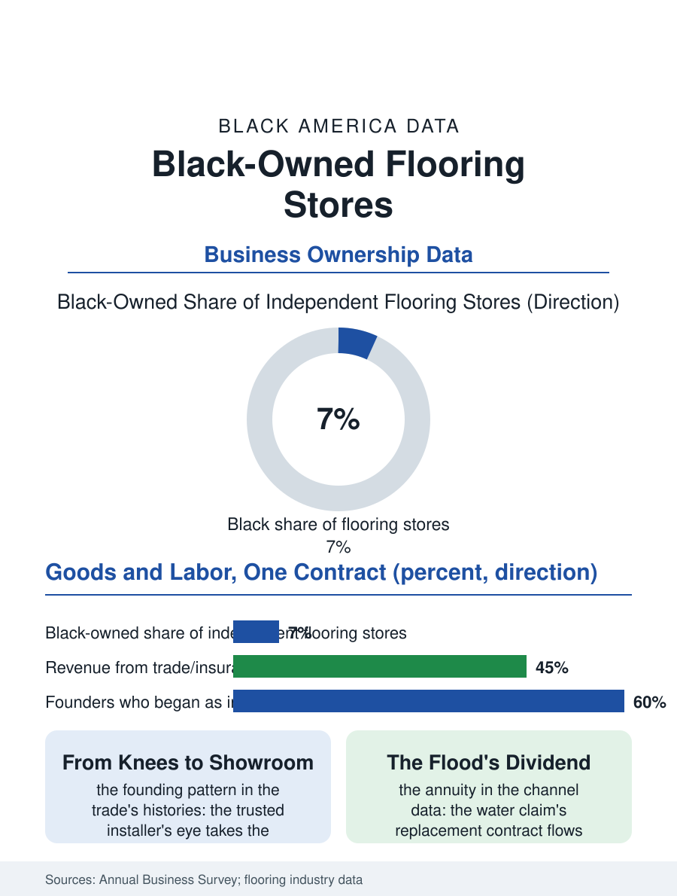

Black Business
Under Everything: Black-Owned Flooring Stores
The installer who opened the showroom above his own crew, the water claim's annuity, and the name walked on for a decade. The flooring file.

The flooring store sells the surface the whole building stands on, and its Black-owned tier descends from the installation trades: the carpet layer and the hardwood finisher who opened the showroom above their own crews, in a trade where the product and the labor are sold in one contract. The business census counts the flooring stores in the thousands. This article reads the flooring file.
The Crew That Opened a Showroom
The founding pattern is the trade's: the installer, whose knees and whose eye the builders already trusted, takes the retail margin by stocking the material he once only laid, the showroom's samples converting his reputation into the customer's one contract for goods and labor in the pattern of the appliance file's hybrid. The economics hinge on the measurement and the waste, the room's true yardage and the installation's calendar being the store's craft knowledge priced into the quote, against the big box's free measure and the platform's calculator whose errors the independent's crew discovers at the customer's floor. The product's eras are the file's geology: the wall-to-wall carpet's reign, the hardwood's restoration as the old floors were uncovered, the laminate and the luxury vinyl plank's current conquest of the middle market on the waterproof claim, each era repricing the store's stock and the installer's skills in sequence, the finisher of the oak giving way to the click-lock crew in the labor file's own transition. The measurement's house call is the store's theater as the parts counter's knowledge was, the estimator in the living room reading the renovation's whole story from the old floor's testimony, the water's stain and the traffic's path and the addition's seam, and converting it into the quote whose accuracy is the store's bond, the surprises priced honestly before they are found rather than billed after, a practice whose reputation value the review platforms now transmit at the speed the corridor's word of mouth once managed alone. The design consultation that rides on the measurement, the samples left overnight so the customer can live with the choice in the room's own light, is the independent's service answer to the warehouse's price, time itself as the product.
Builders, Insurance, and the Water Claim
The store's second market is the trade's: the builders' and the property managers' volume, the apartment turns and the insurance restorations, in which last the water claim is the flooring trade's annuity, the burst pipe and the flooded kitchen generating the replacement's contract through the mitigation companies' referral, a channel whose steady flow the retail showroom's weather cannot match and whose terms, the insurer's pricing schedule, the store's margin must fit. The installation's labor file is the store's own workforce problem in miniature, the experienced layer's scarcity raising the subcontract's price and the store's scheduling art to the level of its survival skills, in the pattern of every trade whose craft lives in the knees.
Under Everything
The flooring file closes on the product's peculiar permanence, because the floor is the one purchase in the home that is walked on by every other, and the store's name is attached to it for the decade of its life in a way no appliance matches, a durability of reputation the proprietor prices into the quote's honesty about the subfloor's surprises. The succession follows the showroom's standard form, the second generation weighing the samples' wall against the distribution's offers. The census counts the flooring stores in the home furnishing categories' kin. The file's last entry is the last plank's click in the emptied room at the job's end, the crew's foreman walking the seams in his socks, in the house whose next twenty years will stand on his firm's work, the store's name in the customer's memory every time the floor is praised, which is the trade's whole advertisement, laid once and walked on daily. The estimator's pencil behind the ear is the trade's portrait in the neighborhood's memory, the man who knew the room's true measure before the tape confirmed it. The socks' verdict, in the trade's own phrase, is the only review that cannot be bought. The floor will outlast the argument about its price by the decade it was laid for.
More in Black Business
Black-Owned Businesses: Counts, Receipts, and the Representation Gap
About 161,000 Black-owned employer firms and three million solo ventures: how the Census Bureau counts Black business ownership, where firms concentrate, and the gap between population share and business share.
Black Median Net Worth: The Wealth Gap in Federal Reserve Data
The Federal Reserve puts Black median family net worth at $44,900, against $285,000 for White families — about 16 cents on the dollar. The widest gap in economic data.
Black Buying Power: The $1.8 Trillion Consumer Economy
Black buying power is estimated at about $1.8 trillion — larger than the economy of most nations. What the figure measures, who produces it, and what it buys.
Source: U.S. Census Bureau, Annual Business Survey for flooring stores; World Floor Covering Association data.